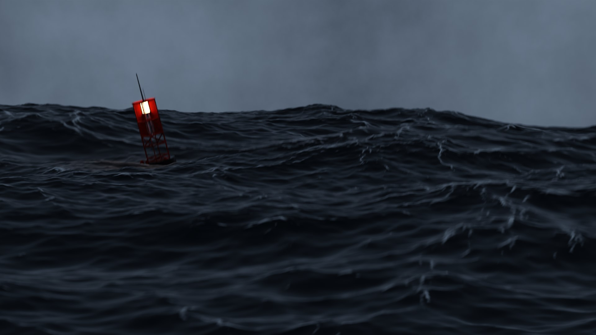
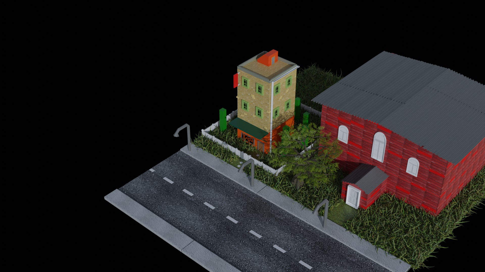
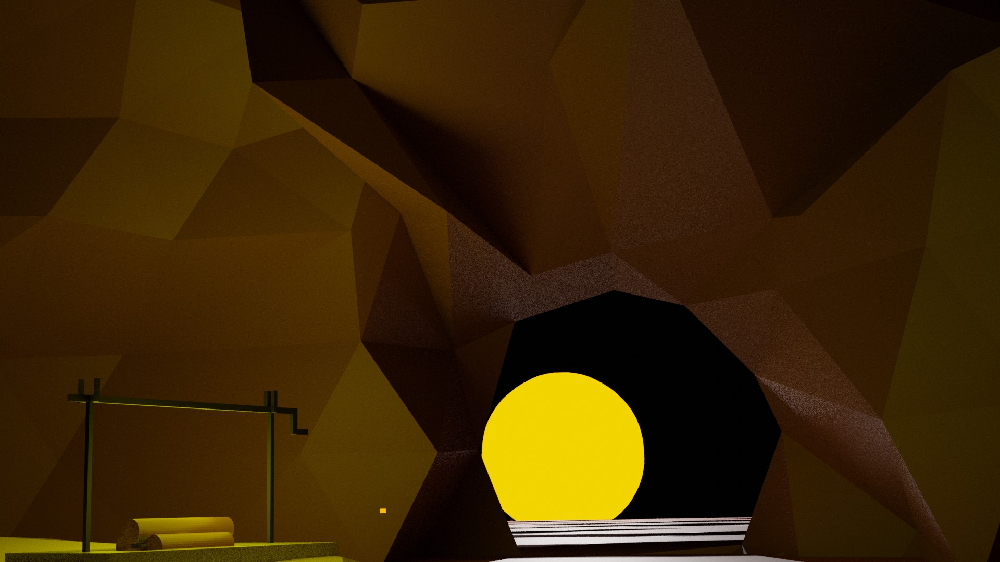
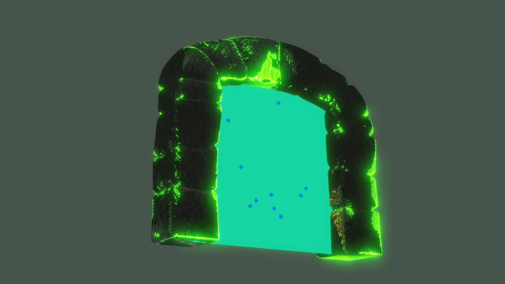
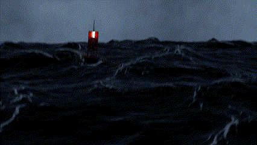

This is all my Blender artworks for now.
Mushroom
This project was one of my favorites. I learnt the basics of emission, geometry nodes as well as touching up with particles and animation

Ocean
With this project I got a better understanding with how snapping works and how it can be applied to multiple options even during and animation.
Other topics i leant was particle emmision, creating fog and the differences between many of blenders render options.

Building Complex
This is one of my first project besides the common blender guru doughnut. I learnt a valuable lesson about what happens if you have too many vertices. XD

Sunset
All this project is, is me attempting a low poly object. There was useful information however. I learnt more about noise textures and how to animate it's value.

Portal
This project is one of my favorites yet there wasnt much to learn from here.
